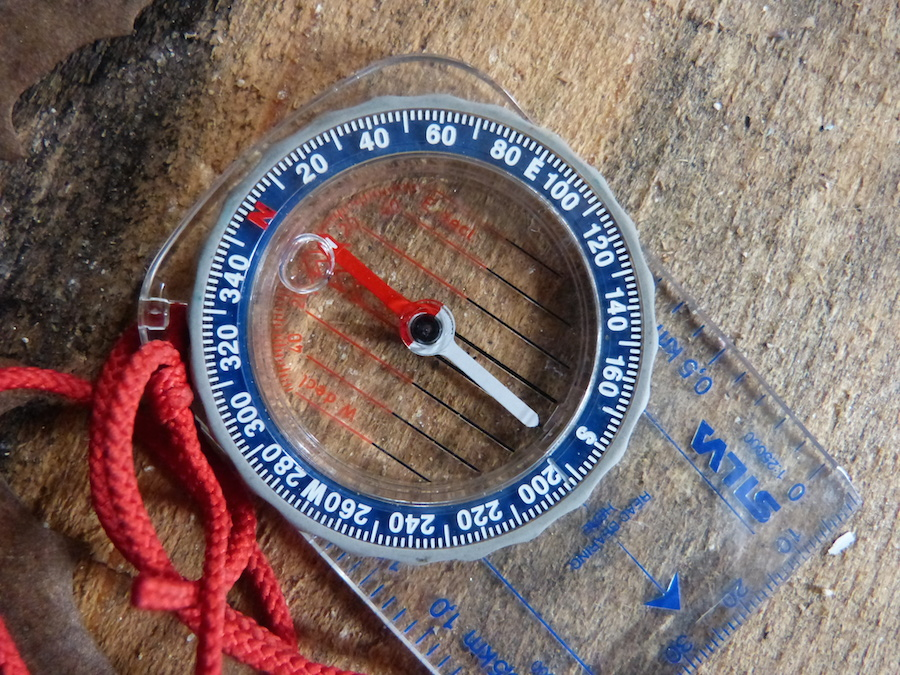

How do I write about my new direction?
Thursday, 12th March 2015

It was something I heard a lot when I was doing my research. "I'm working on this new thing, and I just don't know how to write about it."
Maybe your business has grown, so instead of writing about your own personal journey you're now speaking on behalf of a studio of fellow practitioners. Perhaps you've retrained and your massage therapy now includes elements of Shiatsu, or your yoga classes have a new influence. Maybe your niche has changed and your coaching is now focussed on new mums, or people negotiating the shift into retirement. As self-employed people, or small business owners, we tend to change more often and more quickly than bigger corporations. I know that's been my experience, anyway. One of the things which drew me to start my own business in the first place was the way that I'd started to feel quite restricted by the clearly defined office roles I'd been in before. In my last employed position I'd started learning HTML and getting into coding websites in my spare time. It was something I loved doing, but moving to a role which could involve more of that would mean waiting for a position to come up that was near my home and that aligned with my values. Changing jobs would mean going through a lengthy application process, probably attending interviews, and then the upheaval of a new commute, new colleagues, a new organisation. I started to realise that as someone who loves to learn new things and absorb new practices, self-employment would allow me to transform at the pace I wanted to, and grow my business with it. Sure enough, now that I'm self-employed I've found my business shifting. I've moved from support roles as a virtual assistant, to specializing in an area I know I'm strongest at: copywriting. I was able to make that shift quite smoothly: I could see that writing was the area that provided most value to my existing clients, and that I got most fulfilment from. But how do you write about a new dirction?
1. Share early, share often
Once I realised the direction I wanted my business to go in, I knew I had to put in the work. I wrote about the change I was imagining on my blog, where I'd already been keeping a loose journal of my business. Now I used my blog to invite people to participate in my research, and to talk about what I'd learned. Helping your readers to understand what you're learning about as you're learning it makes it seem much less abrupt when you suddenly announce a new strand to your services. And it builds a sense of anticipation about the launch of your new service, and how it will make a difference to your clients.2. Be OK with being a beginner
Beginner's mind is a concept I love. There's a famous quote from a Zen master that says "In the beginner's mind there are many possibilites; in the expert's only few." This quote reminds me that it's not a bad thing to be just starting out. I'm in the early stages of growing my copywriting business and exploring how I can be of service, and I don't have all the answers yet. But here on the blog, I can explore what I'm learning and talk about the kinds of creative solutions I can provide for my clients. Kathleen's posts on her learning as she trained in coaching are a wonderful example of this. As a regular reader, I was fascinated by her journey and what she was learning, and it definitely made me interested in signing up for a coaching package in future.Give yourself time
Change is something that's difficult to appreciate when we're in it. Often, it's only when we come out the other side of something that we can look back and assess what happened. If you're learning something new, then take half an hour with a cup of tea or coffee (or a glass of wine... no judgment here) and a notebook and do some freehand writing about what's going on. Why have you been drawn to this new direction in the first place? What is it that motivates you to want more about it? Get creative - if your new direction was a colour, what would it be? If your business was a person, how would they look different now that they're into this new thing? Would they have a new haircut, different clothes, a shift in energy, new vocabulary? Maybe your previous incarnation was wild and spontaneous, and your new regeneration is clamer and more grounded. Or perhaps previous you was staid and stiff, and you've loosened up some. These are the kinds of details that can come into your website as you write about your work. Personally, I knew that my new copywriting service was a little more serious than my virtual assistant services were, because it involved me opening up about my creative work. I find it more vulnerable to talk about myself as a writer, and the copy I wrote for my new About page reflects that - it's more creative, and really comes from the heart.How about you?
Have you ever changed direction in your business, or written about a new fascination before it's all taken shape? I'd love to know. Come over to twitter and say hi, or drop me an email. And click the button beow to sign up for more writing tips to share the essence of what you do with your clients.